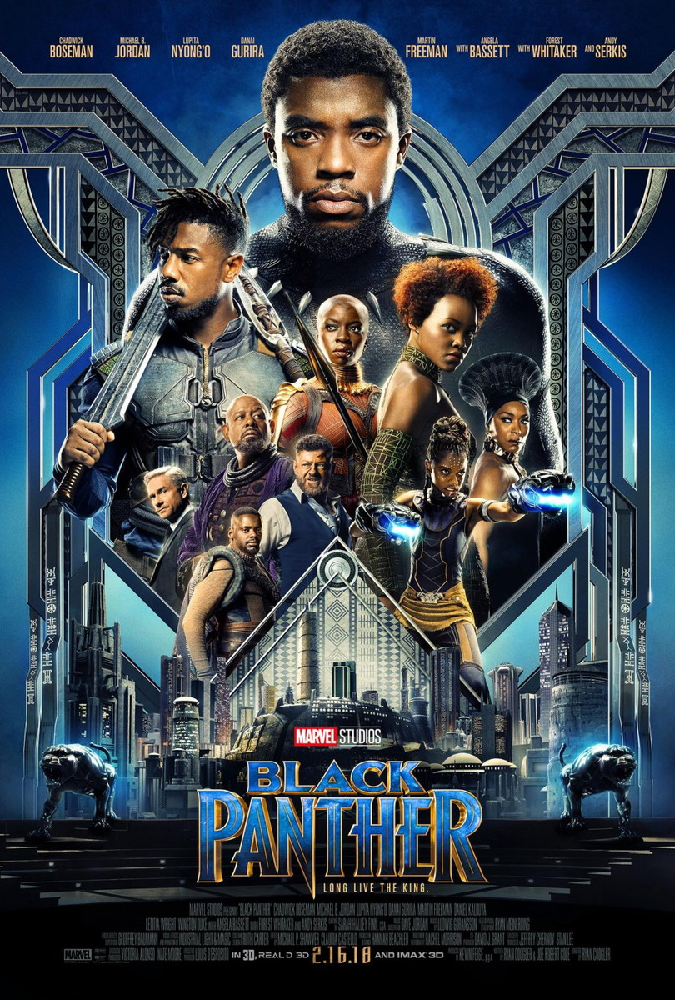

Capitã Marvel (2019)
Sinopse:
Carol Danvers (Brie Larson) é uma ex-piloto da aeronáutica que se torna uma das heroínas mais poderosas da galáxia. Ao se juntar à Força Estelar, uma equipe militar Kree, ela retorna à Terra com novas dúvidas sobre seu passado e sua identidade quando o planeta se encontra no centro de um conflito entre dois mundos alienígenas.
Ficha Técnica:
Direção: Anna Boden, Ryan Fleck
Gêneros: Ação, Aventura, Ficção Científica
Duração: 123min
Áudio: Dublado e Legendado
IMDb: 7.1

Pantera Negra (2018)
Sinopse:
Após a morte do rei T'Chaka (John Kani), o príncipe T'Challa (Chadwick Boseman) retorna a Wakanda para a cerimônia de coroação. Nela são reunidas as cinco tribos que compõem o reino, sendo que uma delas, os Jabari, não apoia o atual governo. T'Challa logo recebe o apoio de Okoye (Danai Gurira), a chefe da guarda de Wakanda, da irmã Shuri (Letitia Wright), que coordena a área tecnológica do reino, e também de Nakia (Lupita Nyong'o), a grande paixão do atual Pantera Negra, que não quer se tornar rainha. Juntos, eles estão à procura de Ulysses Klaue (Andy Serkis), que roubou de Wakanda um punhado de vibranium, alguns anos atrás.
Ficha Técmica:
Direção: Ryan Coogler
Gêneros: Ação, Aventura, Ficção Científica
Duração: 135min
Áudio: Dublado e Legendado
IMDb: 7.7
Doutor Estranho (2016)
Sinopse:
Stephen Strange (Benedict Cumberbatch) leva uma vida bem sucedida como neurocirurgião. Sua vida muda completamente quando sofre um acidente de carro e fica com as mãos debilitadas. Devido a falhas da medicina tradicional, ele parte para um lugar inesperado em busca de cura e esperança, um misterioso enclave chamado Kamar-Taj, localizado em Katmandu. Lá descobre que o local não é apenas um centro medicinal, mas também a linha de frente contra forças malignas místicas que desejam destruir nossa realidade. Ele passa a treinar e adquire poderes mágicos, mas precisa decidir se vai voltar para sua vida comum ou defender o mundo.
Ficha Técnica:
Direção: Scott Derrickson
Gêneros: Ação, Aventura
Duração: 115min
Áudio: Dublado
IMDb: 7.5
O Incrível Hulk (2008)
Sinopse:
Vivendo escondido e longe de Betty Ross (Liv Tyler), a mulher que ama, o cientista Bruce Banner (Edward Norton) busca um meio de retirar a radiação gama que está em seu sangue. Ao mesmo tempo ele precisa fugir da perseguição do general Ross (William Hurt), seu grande inimigo, e da máquina militar que tenta capturá-lo, na intenção de explorar o poder que faz com que Banner se transforme no Hulk.
Ficha Técnica:
Direção: Louis Leterrier
Elenco: Edward Norton, Liv Tyler, Tim Roth
Gêneros: Ação, Aventura, Ficção Científica
Duração: 112min
Áudio: Dublado
IMDb: 6.8